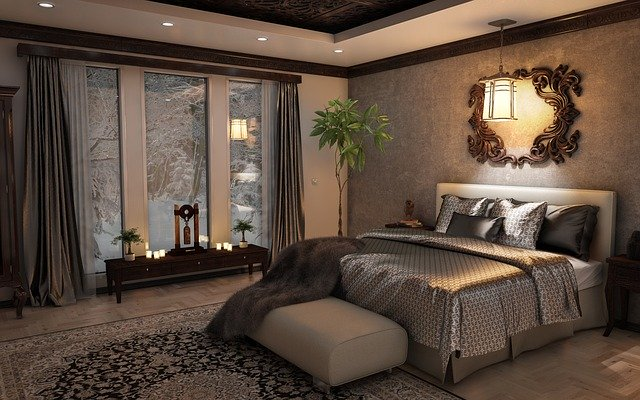

Apartament 3 camere amenajat modern | Nobili Interior Design | Archinect
 Submit Share/Follow Editorial & News Features News Virtual Events Competitions Employment Jobs Talent Finder Active Employers Community People Firms Blogs Forum Work Updates Academia Schools School Blogs Forum About About Archinect Advertising Contact Us Newsletters Privacy Policy Editorial & News Features News Virtual Events Employment Jobs Talent Finder Community People Firms Blogs Forum Academia Schools School Blogs About About Advertising Contact Newsletters PrivacyNobili Interior Design
Constanta, RO
Follow 4 Profile Projects Press Releases Contact Profile Admin: Nobili design Bucuresti | flagProfile Edit Options
Uploading/managing projects and press releases can only be handled in desktop mode
anchor Apartament 3 camere amenajat modern 4 more images ↓
Apartament 3 camere amenajat modern
Realizam proiecte de design interior apartamente in Bucuresti cu servicii complete de amenajari interioare si livrare de materiale de designer din gama de lux import Italia.
Atunci cand spunem “acasa” spunem locul in care ne simtim cel mai bine. Protejati, iubiti, linistiti si relaxati. Locul care ne intelege dorintele si care seamana cu noi. Astfel decorarea lui trebuie sa tina cont in primul si-n primul rand de personalitatea noastra. De aceea alegerea stilului de design interior nu se face tinand cont doar de ultimele tendinte sau de faptul ca un prieten si-a amenajat locuinta intr-un fel si noua pare sa ne placa ci tinand in primul rand cont de propriile dorinte.
Revenind la modernisti si la modul in care acestia aleg sa-si decoreze locuinta, trebuie sa spunem faptul ca acestia pun accent pe senzatia de libertate, pe simplitatea care ofera eleganta si mai ales pe originalitatea care vine din lucrurile marunte. Astfel, acest stil decorativ nu te obliga sa bagi mana adanc in buzunar ci chiar te invata cum sa te bucuri de confort si bun gust fara o cheltuiala substantiala.
Portofoliu proiecte realizate de firma noastra : http://www.nobili-interior-design.ro/portoliu/portofoliu-rezidential .
Desi este declarat un stil libertin, sfaturile unui design de interior reprezinta o necesitate care ne ajuta sa ocolim situatiile care ar putea sa devina neplacute si de prost gust. Un specialist ne-ar intelege perfect dorintele si in acelasi timp ar reusi sa le muleze pe unele reguli simple dar esentiale ale modernismului. Astfel apartamentul tau va radia de frumusete, stralucire, originalitate, va fi caracterizat de luminozitate si stil, devenind un loc potrivit deschiderii spirituale si activitatilor relaxante.
Bucurandu-se de culoare, de contrast, de nuante calde, de linii rezonabile, de o mobila simpla si eleganta, de obiecte decorative multicolore, modernisti ne ofera o lectie de viata traita frumos intre libertate si originalitate.
Suntem moderni in ceea ce priveste imbracamintea pe care o adoptam. Suntem moderni in gandire, in modul de exprimare si de petrecere a timpului liber. Suntem moderni pentru ca asa simtim si pentru ca prea multe reguli ne cenzureaza. Suntem moderni pentru ca avem curaj sa traim asa cum ne place. Ei bine, observam ca modernism nu mai este doar un curent artistic sau cultural ci a devenit un mod de viata care domnina o sumedenie de persoane. Astfel acesta a devenit si o sursa de inspiratie in ceea ce priveste designul ales pentru interiorul apartamentului nostru.
Site web: http://www.nobili-interior-design.ro .
Read more Status: Built
Location: Bucuresti, RO